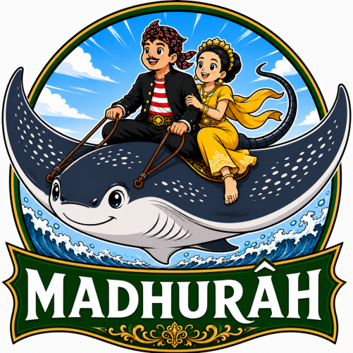

A keyboard for the MADHURÂH language written with Latin script for the Madurese people.

The logo is a picture of a stingray carrying a Madurese couple on its back to rescue them from a dangerous wave in the middle of a big ocean. We have a folklore through which we are told that our seafaring ancestors were rescued by a stingray from being drowned by the angry wave.
Special key combinations to use on desktop computers:
Special characters on longpress keys: a, d, e, t